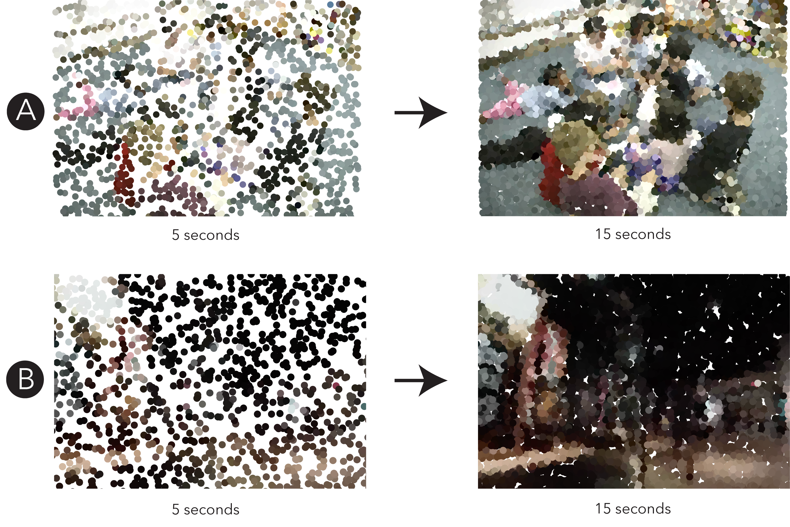

Figure 5. Screenshot from the IGS showing six year old Blake’s movement across his visit over floor plan and space-time views. His movement is drawn as a red path and blue path segments mark 3 gallery spaces where Blake is running. Animated demonstration video available at: here
